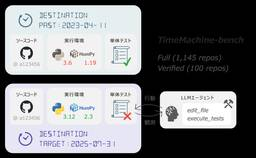

フューチャー技術ブログ
https://future-architect.github.io/
フューチャーの開発者による公式技術ブログです。業務で利用している技術を幅広く紹介します。
フィード

クラウド世代のITコンサルタントが『Data Center』で物理インフラを体験してみた
フューチャー技術ブログ
<h1 id="1-はじめに"><a href="#1-はじめに" class="headerlink" title="1. はじめに"></a>1. はじめに</h1><p>製造エネルギーグループの片岡久人です。</p><p>『Data
3日前
記録のための日記から、対話で育てる日記へ ーClaude × Obsidian × MCPで作る思考のジャーナリングー 37
37
フューチャー技術ブログ
<img src="/images/2026/20260317a/top.jpg" alt="" height="900" width="502"><h1 id="はじめに"><a href="#はじめに" class="headerlink"
5日前

【著者解説】NLP2026 若手奨励賞受賞論文 "TimeMachine-bench" を著者が解説する
フューチャー技術ブログ
<h1 id="はじめに"><a href="#はじめに" class="headerlink" title="はじめに"></a>はじめに</h1><p>こんにちは。Strategic AI Group (SAIG) の藤井です。</p><p>この度、3/9
6日前

DynamoDB設計ガイドラインを公開しました
フューチャー技術ブログ
<img src="/images/2026/20260227a/top.jpg" alt="" wigth="900" height="399"><h1 id="はじめに"><a href="#はじめに" class="headerlink"
23日前
Java製のSalesforce Apexパーサーをブラウザで動かす
フューチャー技術ブログ
<p>コアテクノロジーグループの二村です。</p><p>普段は膨大なドキュメントやソースコードを解析して、ファクトベースでお客様のシステム移行計画策定や、保守改善を支援するコンサルティング業務を行っています。また、そのためのマネージドサービスの開発を行っています。</p><p
25日前
非同期設計ガイドラインを公開しました
フューチャー技術ブログ
<img src="/images/2026/20260220a/top.jpg" alt="" width="1024" height="559"><h1 id="はじめに"><a href="#はじめに" class="headerlink"
1ヶ月前
2026年 フューチャー技術ブログリレー企画
フューチャー技術ブログ
<img src="/images/2026/20260219a/unnamed.jpg" alt="" width="1024" height="572" loading="lazy"><h1 id="はじめに"><a href="#はじめに"
1ヶ月前
今なぜ「アルゴリズム」を学ぶのか？ —— Software Design2026年1月号への寄稿によせて
フューチャー技術ブログ
<img src="/images/2026/20260217a/pxl_20260121_025217424.jpg" alt="" width="1000" height="1333" loading="lazy"><p>同僚の澁川さん、松本さんと一緒に、<a
1ヶ月前
アーキテクチャガイドライン公開スケジュール（2026年）
フューチャー技術ブログ
<img src="/images/2026/20260216a/unnamed.jpg" alt="" width="1024" height="559" loading="lazy"><h1 id="はじめに"><a href="#はじめに"
1ヶ月前
2026年2月版: Dev Containersでプチはまり(Node.js 24とPostgreSQL 18とプロキシ)
フューチャー技術ブログ
<p>Dev Containers便利ですよね？使っていますか？便利なのですが、久々に新しい環境を作ろうとしてちょっとはまったので解決のメモを書いておきます。書いておけばそのうち生成AIが拾って簡単に解決できるようになると思うので。</p><h1
1ヶ月前
API費用8ドル。「ホリエモンAI選挙」の分析フローをDifyで一部再現してみた ‐ マルチAIエージェント実装ガイド
フューチャー技術ブログ
<img src="/images/2026/20260212a/スクリーンショット_2026-02-09_5.08.43.png" alt="" width="1200" height="812" loading="lazy"><h2 id="はじめに"><a
1ヶ月前
ログ設計ガイドラインを公開しました
フューチャー技術ブログ
<a href="https://future-architect.github.io/arch-guidelines/documents/forLog/log_guidelines.html"><img
1ヶ月前
新規事業開発にて「ITやAIは目的ではなく手段である」と再確認した話
フューチャー技術ブログ
<img src="/images/2026/20260209a/top.png" alt="" width="800" height="714"><h2 id="はじめに"><a href="#はじめに" class="headerlink"
1ヶ月前
データ分析を『ただの数字』で終わらせない。現場で痛感した、精度を支える4つの必須ステップ
フューチャー技術ブログ
<img src="/images/2026/20260206a/carlos-muza-hpjSkU2UYSU-unsplash.jpg" alt="" width="1200" height="855" loading="lazy"><h1 id="はじめに"><a
1ヶ月前
Go 1.26で変わるcgoの高速化 〜ランタイム刷新がもたらす30%の高速化とその舞台裏〜
フューチャー技術ブログ
<img src="/images/2026/20260205a/image.png" alt="" width="1200" height="434" loading="lazy"><p><a
1ヶ月前
Go1.26 リリース連載 runtime/secret (experimental)
フューチャー技術ブログ
<h2 id="はじめに"><a href="#はじめに" class="headerlink" title="はじめに"></a>はじめに</h2><p>ペンギンになりたいエンジニアの島ノ江です。</p><p>普段は CSIG で「<a
2ヶ月前
Go1.26リリース連載：newプリミティブの拡張
フューチャー技術ブログ
<img src="/images/2026/20260202a/top.jpg" alt="" width="400" heihgt="400"><h1 id="はじめに"><a href="#はじめに" class="headerlink"
2ヶ月前
Go 1.26の新GC「Green Tea（緑茶）」解説
フューチャー技術ブログ
<img src="/images/2026/20260130a/Green_Tea_GC開発のタイムライン.png" alt="Green_Tea_GC開発のタイムライン" width="1200" height="563" loading="lazy"><p>Green
2ヶ月前
Go 1.26で go fix が面白くなった
フューチャー技術ブログ
<h1 id="はじめに"><a href="#はじめに" class="headerlink" title="はじめに"></a>はじめに</h1><p>TIG（Technology Innovation Group）の真野です。</p><p><a
2ヶ月前
Go 1.26 リリース連載 Goroutine Leak Profiles
フューチャー技術ブログ
<img src="/images/2026/20260128a/top.jpg" alt="" height="1024" width="1024"><h2 id="はじめに"><a href="#はじめに" class="headerlink"
2ヶ月前
Go 1.26連載：インデックス＋SIMD
フューチャー技術ブログ
<img src="/images/2026/20260127a/top.jpg" alt="" width="615" height="615"><p>Go 1.26のリリースの足音が聞こえてきたので<a
2ヶ月前
アーキテクチャガイドライン振り返り（2025年）～15本を作成してみてどうだったか～
フューチャー技術ブログ
<img src="/images/2026/20260123a/unnamed.jpg" alt="unnamed.jpg" width="1024" height="559" loading="lazy"><h1 id="はじめに"><a href="#はじめに"
2ヶ月前
なぜ日本語入力と相性の悪いWebサイトができてしまうのか
フューチャー技術ブログ
<p>海外製のチャットサービスとかでIMEを確定しようとしたら勝手に送信されてしまって困った！ という経験をしたかは多いでしょう。日本語入力はIME(Input Method
2ヶ月前